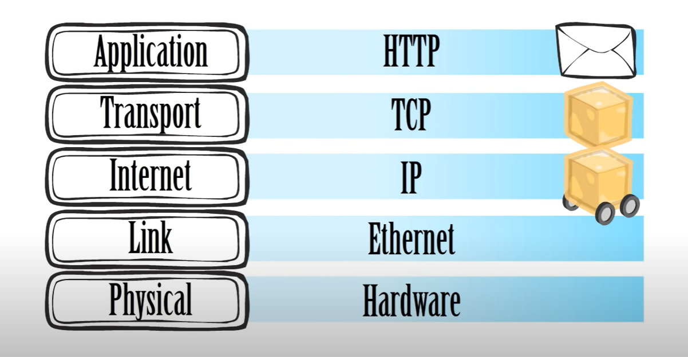

Q1) Introduction to the World Wide Web (WWW): Explain how the web works, the role of web servers, what are web browsers?
When a website is created, it is set up in a web server. The web server is where the website is individually stored publicly for people to see. When someone wants to access this website, the browser on the device goes to a DNS. This server finds the IP address of the website - an identification system of the site - and then sends the data from the website to your browser. A web browser is an application software that initially sends a request for and receives data from the website’s web browser. Before presenting the website, the browser decodes the HTML (language used to develop the website) and constructs it into graphics, images and words for humans.
Q2) How is the world wide web different from the internet?
The internet is different from the World Wide Web because of their different functions and purposes. The internet is the system in which computers communicate with one another. They do this using networks, using both wired and wireless means. The internet allows for users to communicate, send files, conference and access the WWW. The World Wide Web is how websites and other digital media are connected to devices. The system which they connect to each other is the Internet.
Q3) What is an intranet? How does it relate to the internet?
An intranet is a private network used to connect different parties of an organisation. It helps people within the organisation to communicate, store information and boost teamwork. Intranets are usually managed with personal personnel such as a company’s hired IT or Communications workers. These intranets have many benefits for the costs of running them, such as improved collaboration, efficiency in the workplace and cost-saving, especially for large companies. An example of an intranet is Microsoft SharePoint, one of the largest intranet providers. However, the industry is expanding with companies solely dedicated to producing intranets for companies. Intranets uses some key features of the internet, such as HTTP communication systems, email and file transferring. It can be thought of as a private extension of the internet.
Q4) What is an internet protocol? Compare HTTP, TCP/IP and FTP.
An internet protocol is a set of rules (protocols) responsible for the transmission of data from an alphabetic message or file into computer language then back into alphabetic message for people to understand. The Internet Protocol is divided into 5 different protocols which each handle a separate function, working together to transmit data. The 5 layers are the application, transport, internet, link and physical protocols. The application protocol is where the message is made, usually with HTTP (Hypertext Transfer Protocol). The transport layer uses TCP (Transmission Control Protocol) to break the message into blocks called packets and check if all of it has been loaded in. FTP (file transfer protocol) allows the files or data to transfer between two computers via. The Internet. The Internet Protocol (IP) delivers the message to the link (usually ethernet or wifi) which then connects the internet to the hardware. This message is then done in reverse to correct the message and display it for the user.
 Image of the layers of protocols - Courtesy of Spencer Brinkerhoff III